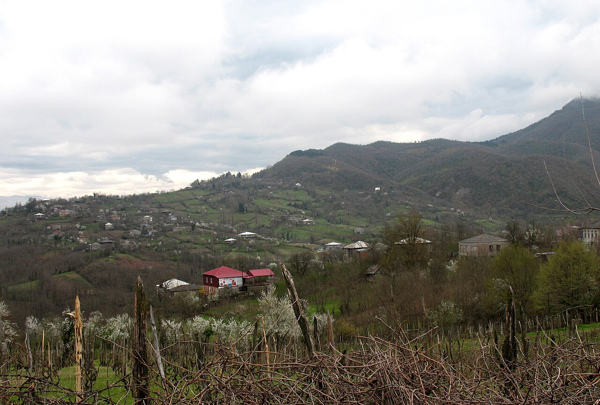
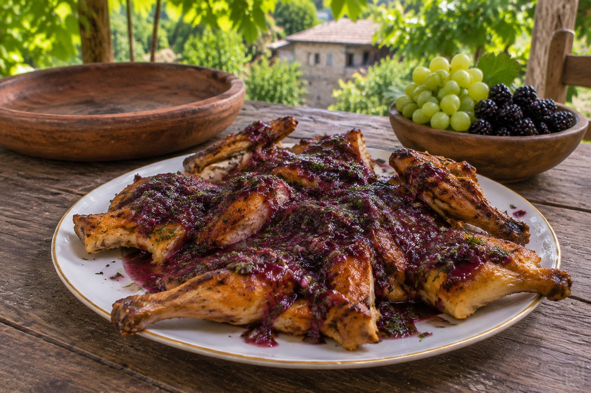

Гостья

Попробуйте ягоду. Нет, не с верхней грозди, а с нижней, которая в тени. Кислая? Так и надо. Ещё неделя, и виноград начнёт набирать сладость, тогда соуса из него уже не сделаешь. Это время у нас называется так же, как сам виноград, — исрими. Так зовут виноград, который уже налился, но ещё не созрел: с солнечного бока ягода светлеет, а внутри зелёная и такая кислая, что сводит скулы. Рвут его немного, по грозди-две с куста. Лозе это не обида, ей даже легче, меньше тянуть.
Ежевику собрала Мари, моя внучка. Вон она, у канавы, с ведром. Утром пришла с исцарапанными руками и чёрным ртом, так что ведро у нас, считайте, было полтора, половину она съела по дороге. В этом году она пошла в школу и уверена, что ежевика растёт у канавы специально для неё. Пусть так и думает.
Садитесь в тень, под навес. Я сейчас буду протирать ягоды через сито, это долго. Вы мне можете не объяснять, зачем русскому писателю наш цыплёнок, мне уже сказали: вы ездите по сёлам и записываете, кто что готовит и почему. Тогда слушайте, у нас как раз «почему» длинное.
То, что я делаю, называется цицила исрим-маквалши. Цицила — это молодая курочка, цыплёнок, а маквали — ежевика. Соус из незрелого винограда и ежевики вместе. В других краях их тоже берут, но по отдельности, а у нас смешивают. Цыплёнка жарят на кеци. Кеци — это глиняная сковорода, плоская, без ручки, вот она греется на углях. Цыплёнка кладут на горячую кеци и придавливают сверху второй, тоже раскалённой. Эти кеци новые, я покупала их в Убисе, там у дороги их продают вместе с кувшинами. Старые, ещё свекровины, я разбила позапрошлой зимой.
Есть у нас такое выражение: «посади цыплёнка в исрим-маквали». Так говорят, когда в доме гость, которого надо почтить. Не родственник и не соседка, которая зашла за солью, а настоящий гость. Сегодня это вы. Так что не уходите до вечера, раз уж цыплёнок сидит ради вас. Перед цыплёнком будет неудобно.
А я это выражение лет десять не могла слышать. Сейчас расскажу почему.
В две тысячи втором году я уехала в Италию. Тогда из нашего села уезжали почти все женщины, кто мог стоять на ногах. Мужчины ехали в Россию на стройки, а женщины в Грецию и в Италию, ухаживать за стариками. По-итальянски такую женщину называют баданте, это значит «та, что присматривает». Я до этого работала бухгалтером на заводе в Зестафони. Завод то работал, то стоял, зарплату давали раз в полгода, а иногда и не деньгами. Муж мой, Гела, возил людей на маршрутке в Кутаиси, и на бензин у него уходило больше, чем он привозил. Сыну, Левану, было девять, Тамуне пять.
Визу тогда покупали. Знаешь человека, который знает человека, отдаёшь ему деньги, и через месяц у тебя в паспорте туристическая виза на две недели. А где взять деньги? Мы заложили дом. Вот этот, где вы сидите. Свекровь, Додо, сама сказала: закладывайте, мне в нём жить всё равно, а дом ничего не стоит, пока в нём нечего есть. Она осталась с детьми. Я уезжала в конце февраля, Тамуна в тот день болела, с температурой, и не проснулась, когда я уходила. Я до сих пор не знаю, лучше это было или хуже.
Виза была на две недели, а без бумаг я прожила там семь лет. Без бумаг — это значит, что ты можешь жить, работать, ходить в магазин, но не можешь уехать. Уедешь, и обратно тебя уже не пустят. Так что домой нельзя: ни на похороны, ни на свадьбу, ни когда сын сломал руку. Я работала под Понтедерой, это в Тоскане, у синьора Этторе. Ему было за восемьдесят, вдовец, ноги у него не ходили, а характер ходил прекрасно. Жена его, синьора Инес, умерла за год до меня. Дом стоял на холме, а ниже по склону шёл виноградник, ряд за рядом, совсем как у нас, только земля светлее.
По воскресеньям у меня был выходной. Мы, женщины, собирались в парке у вокзала: грузинки, украинки, молдаванки, одна армянка из Гюмри. Говорили по-русски: итальянского нам тогда ещё не хватало, а другого общего языка не нашлось. В школе я по русскому получала четвёрки и думала, что больше он мне никогда не понадобится. А понадобился. Так что вы со мной сейчас говорите на языке моих воскресений. Не обижайтесь, если где-то скажу по-украински, это у меня с той лавки. С неё же я и звонила домой, по карточке. Карточка стоила пять евро, на ней было минут двадцать, и я эти минуты делила: пять Додо, пять Левану, десять Тамуне. Тамуна в трубку молчала. Додо мне объясняла: она кивает, это она тебе кивает.
Первое лето я терпела. На второе, в июле, вышла утром в виноградник и увидела, что ягоды светлеют с одного бока. Руки у меня пошли сами. Я нарвала полную корзинку зелёных гроздей, а внизу у канавы росла ежевика, такая же, как наша, только колючее. И тут синьор Этторе как закричит из окна. По-итальянски я тогда понимала через слово, но и так было ясно, что кричит он про виноград. Стою с корзинкой и думаю: всё, сейчас выгонит, и куда я пойду без бумаг.
А он покричал, замолчал и вдруг засмеялся. И велел подкатить его к лестнице в погреб. Сам спуститься он не мог, показывал пальцем, а лазила я. В дальнем углу, за банками с помидорами, стояли бутылки, подписанные рукой синьоры Инес, и одна была почти полная. Агресто. Это сок из зелёного винограда, в Тоскане его льют вместо уксуса. Синьора Инес делала его каждое лето из тех гроздей, которые снимают с лозы, чтобы остальным было легче. Из тех самых, понимаете? Которые я нарвала. Я стояла в чужом погребе с бутылкой в руках и не понимала, где я, дома или нет. Я всю жизнь думала, что это только мы, имеретинцы, такие бережливые, что пожалели зелёный виноград. Тамуна мне потом вычитала, что ещё Джавахишвили писал: лоза гнулась под гроздьями, и грузинам было жалко, чтобы пропадала даже незрелая ягода. А тосканцам, оказывается, тоже было жалко.
Цыплёнка я купила на рынке, молодого. Кеци, конечно, не было, откуда в Тоскане кеци. Я взяла самую тяжёлую сковороду, раскрыла цыплёнка, положила кожей вниз, а сверху ведь надо придавить. Дома придавливают второй кеци, а тут чем? Я пошла в сарай, нашла кирпич и обернула его фольгой. Синьор Этторе увидел и говорит: «Pollo al mattone!» Цыплёнок под кирпичом. Я опять ничего не поняла. А это, оказывается, у них в Тоскане так жарят испокон веку, ещё его дед жарил под кирпичом, прямо на углях. Я тридцать лет думала, что это моя свекровь придумала, от бедности, когда второй кеци не было и она клала сверху камень. А он сидит в своём кресле и рассказывает мне, как его отец ставил кирпич в огонь, чтобы тот нагрелся. Я его спрашиваю: а соус? А соуса, говорит, никакого, лимон и розмарин. Тут уж удивился он.
Я протёрла виноград и ежевику через сито, порубила кинзу, укроп, раздавила чеснок. Он попробовал и сказал, что Инес бы так не сделала, но что Инес бы это съела. С тех пор каждое лето, когда виноград светлел, он мне напоминал: «Лиана, il pollo». Соседям говорил «цыплёнок Лианы», как будто это блюдо такое, с моим именем. Я ему не объясняла, что у нас его готовят для почётного гостя. Мне казалось, это будет неправильно, потому что гостьей в этом доме была я.
А дома, я это узнавала по телефону, Додо в тот же день делала то же самое. Она мне говорила: мы сегодня тоже ели. Это было почти как вместе. Почти.
В две тысячи девятом году итальянцы объявили, что можно оформить тех, кто ухаживает за стариками. Только в сентябре, один месяц. Заявление должна была подать не я, а семья, у которой я работаю. Синьору Этторе было уже под девяносто, бумаги ему было не осилить, и подавал сын, Марко, который приезжал из Флоренции по субботам. Я помню, как он сидел у них на кухне за компьютером и ругался на сайт министерства, а я стояла у него за спиной и боялась дышать. Бумаги пришли весной. Летом десятого года я в первый раз за восемь лет поехала домой.
Всю дорогу я представляла, как Тамуна побежит ко мне через двор. Ей было тринадцать. Она не побежала. Она стояла вот у этого навеса, где вы сейчас сидите, высокая, в незнакомой мне кофте, и сказала: «Гамарджобат». С этим «т» на конце, вежливо, как здороваются с учительницей или со взрослой гостьей. Леван меня обнял, Гела плакал, он у меня плачет легко. А Тамуна пошла ставить чайник.
Вечером Додо вышла во двор и сказала ей: «Посади цыплёнка в исрим-маквали». Как раз было время, виноград светлел. Она сказала это не мне, а девочке, и девочка пошла и всё сделала сама. Она уже умела, её научила бабушка, пока меня не было, и сделала она лучше, чем я, это я вам честно говорю. А я сидела за столом и понимала, что в собственном доме меня принимают как гостью. Почётную, с цыплёнком. Додо ничего плохого не хотела, она хотела меня почтить. Но я ела этого цыплёнка и плакала, а все думали, что от радости.
Потом я ещё девять лет ездила туда и обратно. Синьор Этторе умер зимой четырнадцатого года, я держала его за руку. Марко отдал мне последнюю бутылку синьоры Инес. Она стоит у меня в шкафу, я её не открываю, там давно уже уксус, но выбросить рука не поднимается. Потом были другие старики, в Пизе, в Ливорно. Дом мы к тому времени давно выкупили. В девятнадцатом году я вернулась насовсем. Додо умерла за год до этого, и я успела, я была с ней.
А Тамуна уехала. Без визы у нас ездят с семнадцатого года, и ей уже не надо было закладывать дом и покупать паспорт у человека, который знает человека. Купила билет из Кутаиси до Милана и полетела. Работает в Болонье, тоже со стариками, только по контракту, с выходными и с отпуском. Мари она оставила со мной, когда той было три года. Про отца Мари я вам рассказывать не буду, это отдельная история и не для цыплёнка. А Тамуне я ничего не сказала. Что я могла ей сказать, что так нельзя? Она бы ответила, что уж кто-кто, а я знаю, что можно.
Каждый год в конце июля Тамуна прилетает на две недели, к исрими. Её не надо звать. В начале июля она звонит и спрашивает: «Светлеет?» Я говорю: ещё нет. Через неделю опять: «Светлеет?» И когда я говорю «да», она покупает билет. Четыре часа до Кутаиси, час на маршрутке, и вот она во дворе. Меня восемь лет не пускали домой, а она прилетает за один день, как будто съездила на базар. Я не жалуюсь. По-моему, так лучше.
Завтра она улетает. Поэтому я сегодня делаю два соуса. Один вам, а второй я разолью по бутылкам и заморожу на ночь, утром Тамуна положит их в чемодан, между кофтами. В самолёте он не растает, я уже проверяла. Исрими и ежевику вообще можно морозить, тогда цыплёнка делают хоть зимой. Одну бутылку она отдаст подруге из Зестафони, которая живёт там же, в Болонье, а вторую оставит себе, на свой день рождения в ноябре.
Тамуне я ни разу не сказала «посади цыплёнка». Ни разу за все её приезды. Когда она дома, мы делаем его вдвоём, в будний день, без всякого повода, и едим прямо со сковороды, руками, на кухне, а Мари лезет пальцами в соус. Так едят свои. А вам я положу на тарелку, разрежу как следует и полью сверху. Вот так. Держите вилку. Первый кусок гостю, тут не спорят.
Не потому, что вы чужой. Просто в этом доме уже была одна гостья, и я хорошо помню, как ей было вкусно и как ей было плохо. Так что гостем пусть будет тот, кто приехал записывать. А Тамуна здесь пока ещё не гостья, и пусть так и остаётся, пока я жива.
Мари! Иди мой руки, у тебя ежевика по самые локти. И неси сито, будем тебе показывать, как давить, чтобы косточки не прошли. Тебе ещё пригодится.

Цыплёнок в исрим-маквали
На 3–4 порции.
Цыплёнок
молодая курица (цыплёнок) — 1 шт., около 1 кг
соль — 1 ч. л.
молотый чёрный перец — 1 ч. л.
сливочное масло — 30 г
Соус
исрими, незрелый виноград — 300 г
ежевика — 500 г
чеснок — 3–4 зубчика
кинза с семенами — 1 пучок
укроп — 10 г
соль и молотый перец — по вкусу
1. Разрежьте цыплёнка вдоль грудки и раскройте, чтобы он лёг плоско. Натрите солью с перцем и оставьте на 10–15 минут.
2. Разогрейте кеци на углях. Если кеци нет, возьмите толстую чугунную сковороду, смажьте её маслом и разогрейте на среднем огне.
3. Положите цыплёнка кожей вниз, сверху смажьте сливочным маслом и придавите второй горячей кеци. На сковороде придавите крышкой поменьше, а на неё поставьте груз: кирпич в фольге или кастрюлю с водой. Жарьте 20–25 минут, переверните, снова придавите и жарьте ещё 15–20 минут, пока сок у кости не станет прозрачным.
4. Пока цыплёнок жарится, раздавите виноград и ежевику и протрите каждое отдельно через сито или марлю, чтобы ушли косточки и кожица. Смешайте соки.
5. Мелко порубите кинзу и укроп, раздавите чеснок и добавьте в сок. Посолите, поперчите и хорошо перемешайте. Соус не варят.
6. Разрежьте цыплёнка на куски, полейте соусом и подавайте.
Наутро, постояв в соусе, цыплёнок становится ещё вкуснее: мясо успевает взять и цвет, и вкус. Летом исрими и ежевику можно заморозить, тогда блюдо готовят круглый год.
Тбилиси, ноябрь 2026